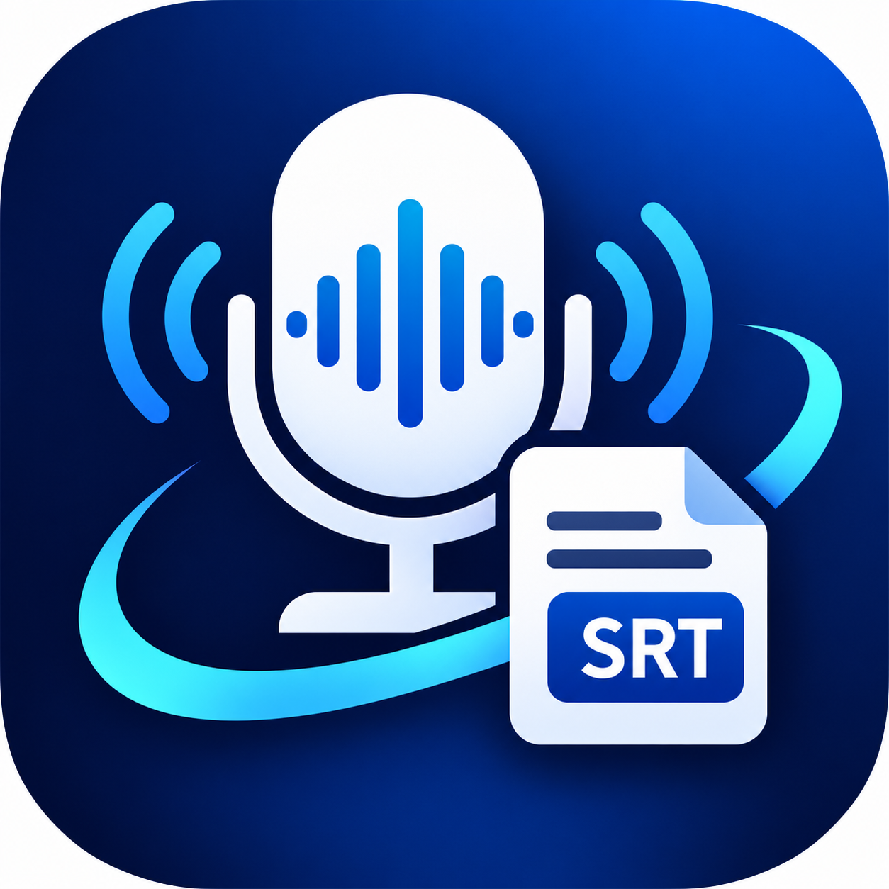
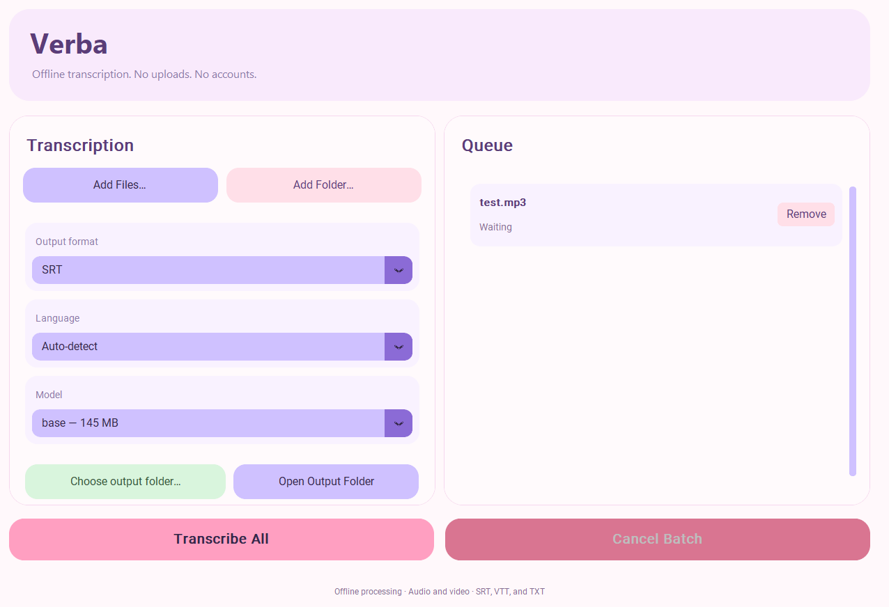

Private by design
Audio and video are processed locally on your Windows computer, not uploaded to a transcription service.

VerbaPrivate transcription for Windows
Turn audio and video into useful transcripts, without sending your recordings to the cloud. Verba keeps the work on your PC.
For Windows · Offline after model setup · No account required

Made for getting words out of the way
A focused desktop app for turning interviews, meetings, lectures, and other recordings into text you can use.
Audio and video are processed locally on your Windows computer, not uploaded to a transcription service.
Add individual files or scan folders for supported audio and video formats.
Save transcripts as SRT subtitles, VTT captions, or plain text.
Run a batch sequentially, follow progress, and reuse the selected model across files.
Your queue and settings are saved. Failed items can be retried without re-running completed files.
Verba asks before downloading a model. After setup, cached models can be used offline.
Your recordings stay yours
Verba runs transcription locally. No account or media upload is part of the workflow. The first model download needs internet access and your approval; after it is cached, you can transcribe offline.
Three steps, no fuss
Select audio or video, or add a folder to find supported media inside it.
Pick a model, language, transcript format, and optional output folder.
Follow the queue and save your finished transcript alongside the source or in your chosen folder.
A clearer way to work with recordings
Keep the workflow simple and the files close. Get Verba for your Windows PC.
Get Verba on Gumroad